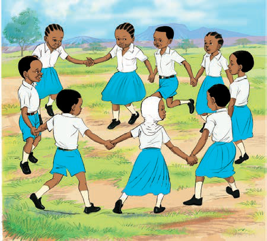

Shughuli ya kufanya
Tucheze mchezo wa ukuti-ukuti
Tucheze wote.
Tushikane mikono kama picha inavyoonesha.

Tuimbe wimbo huu kisha tujibu maswali.
Mwimbishaji:Ukuti-ukuti.
Waitikiaji:Wa mnazi, wa mnazi.
Mwimbishaji:Mwenzetu, mwenzetu.
Waitikiaji:Kagongwa, kagongwa.
Mwimbishaji:Na nini, na nini?
Waitikiaji:Na gari, na gari.
Mwimbishaji:Tumpeleke hospitali asije kusema
kwa baba yake. Waitikiaji:Yesa, yesa, yesa yee. Mwimbishaji:Cheza kidogo. Waitikiaji:Yesa, yesa, yesa yee.
133kwa baba yake. Waitikiaji:Yesa, yesa, yesa yee. Mwimbishaji:Cheza kidogo. Waitikiaji:Yesa, yesa, yesa yee.